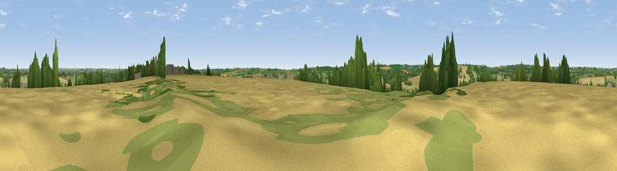

Steepness Hill
#32062 in England · top 64% of its area beats it · near HemptonWhere it is
The exact computed spot (SP 43740 31743). Click the marker for map links.
The view, rendered

A 360° render of this exact spot computed from the terrain model, tree cover and land cover — summer colours, afternoon light, calibrated against photographs of famous viewpoints. Real trees, hedges and buildings will differ in detail.
The panorama
Grey silhouette: terrain skyline in each direction (720 bearings, Earth curvature and refraction included). Dashed green: skyline with trees (+15 m) and buildings (+8 m) as obstacles. Blue strip: how far the ground is visible on each bearing.
Where the view opens
Wedge length = distance to the farthest visible ground on that bearing (vegetation-aware). Rings at 10, 25 and 50 km.
What fills the view
48% cropland · 36% grassland · 14% woodland · 2% built-up
Angular shares of the visible panorama (visual magnitude), not map area. Landscape diversity 0.46 (0–1 Shannon).
Key numbers
More beautiful places nearby
The staircase of upgrades: each row has a higher view potential than everything closer. Driving times are estimates from straight-line distance, calibrated against real road routing — check an actual route before setting out.
| Place | Direction | Drive | Score |
|---|---|---|---|
| Viewpoint near South Newington | W · 2 km | ~5 min | 45.1 |
| Viewpoint near Milcombe | NW · 5 km | ~10 min | 49.2 |
| Crouch Hill | N · 8 km | ~15 min | 55.6 |
| Viewpoint near Whichford | WNW · 11 km | ~21 min | 57.8 |
| Epwell Hill | NW · 13 km | ~24 min | 60.6 |
| Shenlow Hill | NW · 14 km | ~25 min | 65.9 |
| Viewpoint near Upper Tysoe | NW · 14 km | ~26 min | 70.4 |
| Viewpoint near Radway | NNW · 18 km | ~31 min | 71.7 |
51.98244, -1.36454 · source: dobih hill · position refined by local search. Computed location — check access rights before visiting.